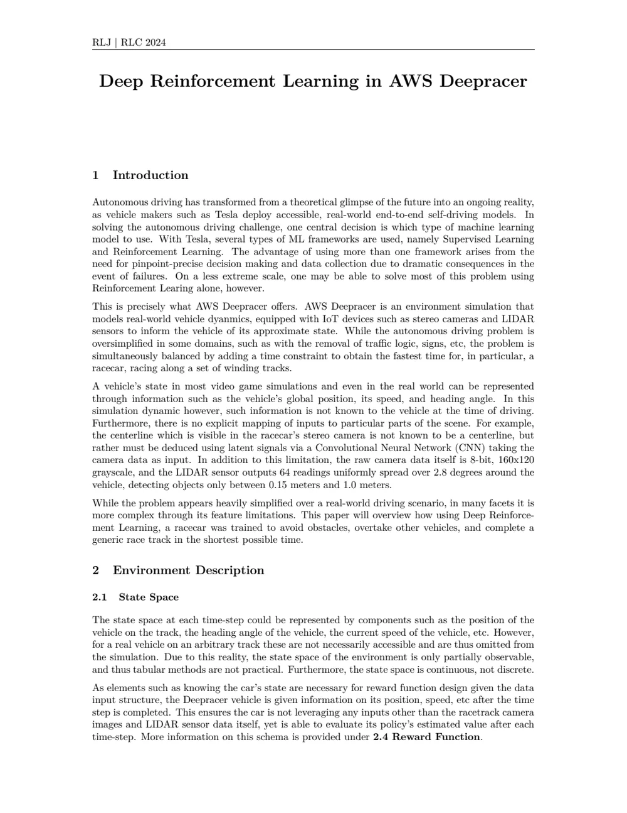

Research & reports
Academic work, with the methods, findings, and original documents in one place.
Papers & reports 1
PPO, curriculum training, reward shaping, and transfer learning across autonomous driving tasks.